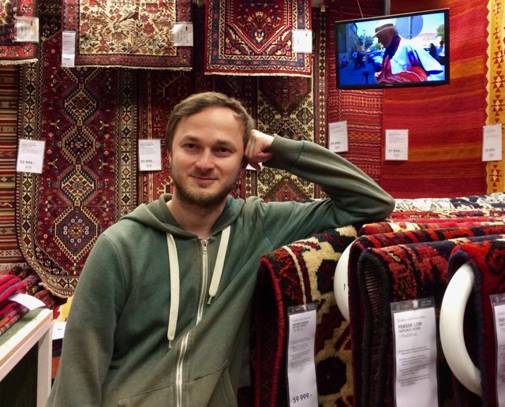
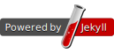
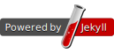

Меня зовут Николай Морев. Вы можете связаться со мной по email kolyuchiy@gmail.com.
Сейчас я работаю iOS разработчиком в Яндекс.Такси.
Мои интересы: мобильная разработка, современные интернет-технологии и тенденции, web-разработка, администрирование UNIX-систем, карты, инфографика, города.
My name is Nikolay Morev. You can contact me by email kolyuchiy@gmail.com
Currently I work as an iOS Developer at Yandex.Taxi.
My interests include mobile and web development, Internet and technology trends, UNIX-like systems, maps, infographics, cities.


 
